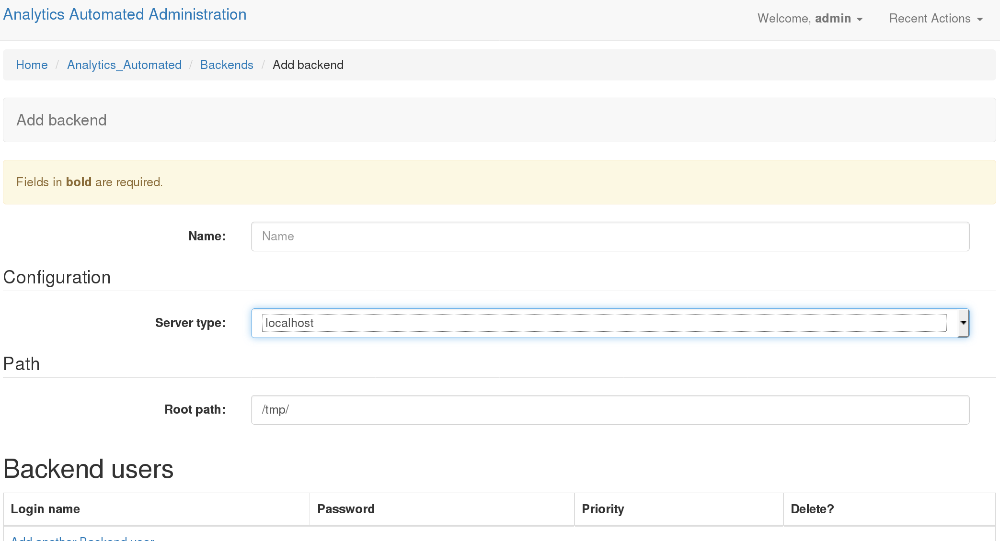

Building Jobs Overview¶
Configuring jobs is most easily accomplished with the user interface. It is possible to do this programmatically and the A_A github account comes with a python script, populate_analytics_automated.py which has an example of a simple job configuration. Additionally it is possible to define jobs using yaml and upload those to the system
To define a job first you need to define a Backend and a series of Tasks and then these Tasks can be plugged together as a Job.
Assuming you correctly followed the dev installation instructions, you’ll need to log in by pointing your browser at http://127.0.0.1:8000/admin/ and log in using the superuser details you set during installation.
Define a Backend¶
The first thing to do is to define the details for each Backend your tasks will use. A backend is the location where a computational task is executed. In the most basic configuration you would start only one set of workers watching only the task queues for the LOCALHOST backend so for this example we’ll only configure one LOCALHOST backend.
In the admin interface click on the Backends option.
Name: Gives your backend a useful memorable name
- Server Type: Tells A_A what kind of execution location this is.
- ‘localhost’: executes the computation on the machine that the celery worker is running on ‘GridEngine’: uses python DRMAA to submit jobs to a Grid Engine head node running on the same machine the celery work is running on ‘Rserver’: This option is not currently supported
Root Path: This is a location on a disk (or network drive) which the backend celery workers can write to and will be used to store temporary files which the tasks needs on execution
Backend Users: You can define a user (user name and passowrd) which the worker will use to execute the task on backend which support this functionality (i.e. Hadoop, Grid Engine). This is ignored for other backend types. NOTE: LOGGING IN AND USER JOB PRIORITY IS NOT CURRENTLY SUPPORTED IN THIS VERSION OF A_A
Defining a Task¶
Return to the admin interface at http://127.0.0.1:8000/admin/. Click on the Tasks link and then select “Add Task”.
Task 1

Name: A useful memorable name for this task. It is convenient if you avoid using spaces
Backend: The backend where this task will run, you’ll select from one of the choices you created previously
Description: This allows you to enter a short description of the task.
In Glob: A comma separated list of file endings (i.e. .txt, .pdf, etc..) for files the task will consume. If this task needs to consume data sent by the user then you must include .input. Internally the system gives each task a UUID. Each entry in the in glob field causes the system to construct a name with the following pattern UUID.[ENDING]. Each of these internal names can be refered to in the Executable field (see below), the first one is called $I1, the second $I2 and so forth.
Out Glob: A comma separated list of file endings (i.e. .txt, .pdf, etc..) This defines the file endings for all files that will be gathered up and returned to the database when the task completes. As per the ‘In Glob’ field each of these output files creates a name as per UUID.[ENDING] and these are made available to the Executable fields as $O1, $O2 etc...
stdout glob: If you wish to record the task’s stdout then you can provide a file suffix. The task will now perform as though you had used a standard unix file redirect.
Executable: This is the program the worker will execute with any default flags and options. Using $Ix and $Ox allows you to insert strings JOB_UUID.[1stInGlob] and JOB_UUID.[1stOutGlob]. You can also refer to parameters that the user provides (see below) as $Px.
Job termination behaviour¶
If a task fails the default behaviour is to raise an exception, stop the whole job running and push a message to the user. These options provide some limited control for other type of behaviour
Incomplete Outputs Behaviour: By default the system expect to find at least one output file with each of the file endings provided in “Out glob”. If this isn’t the case then the system will stop future tasks and raise an error. Alternatively you can, stop running task and not raise an error, or silently continue on to the next task in the job.
Custom exit status: Some tasks will output non zero exits statuses that are not failure states. You can provided a comma separated list of these “acceptable” exit status.
Custom exit behaviour: If you provide a custom exit status, you must provide a behaviour. Either when the task detects these values is halts the job throwing an error, it halts job and doesn’t throw and error or it silently continues to the next task. Note the default behaviour of exit status 0 is to move on to the next task, if you add 0 to the “Custom exit status” field you can change this default behaviour
Parameters¶
The task params take one of two forms. Switches which are either present or absent in the command or valued parameters which may of may not have switches
Flag: This string is the value that will be inserted in command if required each parameter is made available to the executable string as $P[INTEGER], numbered in order from top to bottom (i.e. $P1, $P2 etc..). Any flag named ‘VALUE’ is a special case and a user provided value will be made available in the executable string as $VALUE
Default: This is a default value for the parameter if the Bool Valued is set to false.
Note: When users POST to jobs any parameter string values are checked to prevent code injection. Values which contain punctuation, Python reserved words, R base::package functions or valid unix commands are rejected.
Bool Valued: Sets whether this is a boolean flag and therefore whether it needs a default value
REST Alias: This is a short string which identifies this parameter in the REST call the user makes. The string will have the name of the task prepended to it in the REST call.
Spacing: If the param takes a value (or default) this controls whether there should be a space between the flat and the value (i.e flat is -t and value is 12, if true this will be rendered as ‘-t 12’, if false as ‘-t12’)
Switchless: Controls whether the flag should be included or just the value (i.e if true “12”, if false ‘-t 12’)
Environments¶
Users can set shell environment variables using this form.
Env: A string for the name of the environment variable
Value: A string for the contents of that environment variable
Executable Syntax¶
It is worth noting that tasks use the Python package commandRunner to execute (https://pypi.python.org/pypi/commandRunner/). So it is worth reading those docs for the API.
The executable line can be any arbitrarily long command line statement even including ‘;’ and pipes. It must not contain any redirection controls for stdout or stderr. The system makes available a number of control sequences which can be inserted in to the executable string.
IN GLOBS: These are available in the sequenctial order they appear in the ‘in glob’ field as $I1, $I2, $I3 etc...
OUT GLOBS: These are available in the sequenctial order they appear in the ‘out glob’ field as $O1, $O2, $O3 etc...
PARAMETERS: These are available in the sequenctial order they appear in the ‘Parameters’ table field as $P1, $P2, $P3 etc...
TEMPORARY WORKING DIRECTORY: This path is available as a string using $TMP
JOB ID: $ID represents the UUID that the files are named with
VALUE: A special parameters called VALUE is made available as $VALUE
Command construction proceeds by first tokenising the Executable string. Control strings are then interpolated. The following example should explain:
Job ID: f7a314fe
Executable: "/usr/bin/example_binary $P1 -u 123 -la $P2 -input $I1 -out $O1"
Parameter1: "-z"; bool valued False; default 12; spacing True, switchless False
Parameter2: "-lm" bool valued True
in_glob: ".input"
out_glob: ".out, .stdout"
stdout_glob: ".stdout"
Given these settings the following internal strings will be constructed $I1: f7a314fe.input $O1: f7a314fe.out $O2: f7a314fe.stdout $P1: “-z 12” $P2: “-lm”
The final command which will be executed will be equivalent to the following command line call:
/usr/bin/example_binary -z 12 -u 123 -la -lm -input f7a314fe.input -out f7a314fe.out > f7a314fe.stdout
Note that if this is the first task in a job the data sent by the user is made available as a file called [ID].input
Define a Job¶
Once you have defined one or more tasks you can define a Job. Return to http://127.0.0.1:8000/admin/ and click on Jobs then select “Add Job”

Name: A useful name for the job. Users will use this when submitting data to the API
Runnable: Whether the user can POST data and run this job
Validators¶
You can set one or more data validators for the jobs. Validators are blocks of code that parse the incoming datafile and verify it is the kind of data the validator checks for. You are free to write your own validators.
Validation Type: Every public function in validators.py is available as an option
Steps¶
Now you select which tasks will run in which order.
Tasks: use the drop down to select from your named tasks
Ordering: A numeric value which defines the order the tasks will run in starting with the lowest value. These need not start from 0 and need not be strictly consecutive numbers. The system supports limited paralellisation of tasks. Any task with the same ordering value will run concurrently. It is up to you to understand task dependency and order your task appropriately.
Using Your Job¶
When you have now defined your first job. Users can use it by making a multi-part form POST request to http://127.0.0.1:8000/analytics_automated/submission and passing all the correct values.
Users must at a minimum pass the following information in
job: The name of the job as defined in the Job form in this example ‘job1’
submission_name: A string by which the user will remember thier submission
email: An email address (currently required even if A_A is not set to return emails)
The job described above has 2 parameters and values for these must be provided by the user.
Checking what jobs are available¶
Once you have defined some jobs the system provides a GET end point, /endpoints which returns a list of all the valid jobs and their required params. You can access this json at
Submitting Data¶
An example of using the api can be found in the send_file.py and send_fasta.py scripts in the example directory.
When a submission is succesful the system returns a blob of json with a UUID. Calling http://127.0.0.1:8000/analytics_automated/submission/[UUID] with a GET request will return a json with the current state of the job.